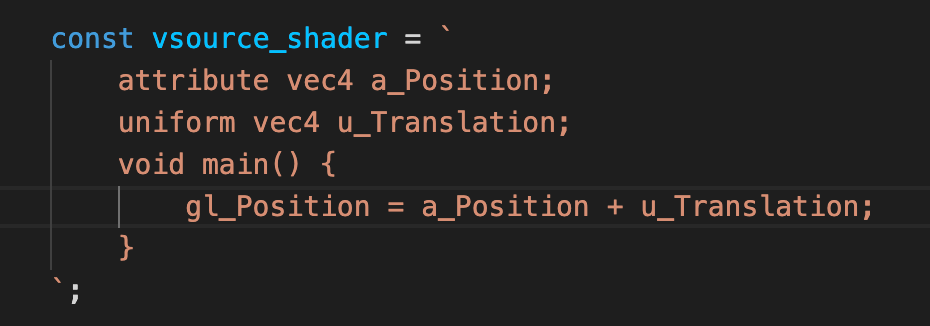
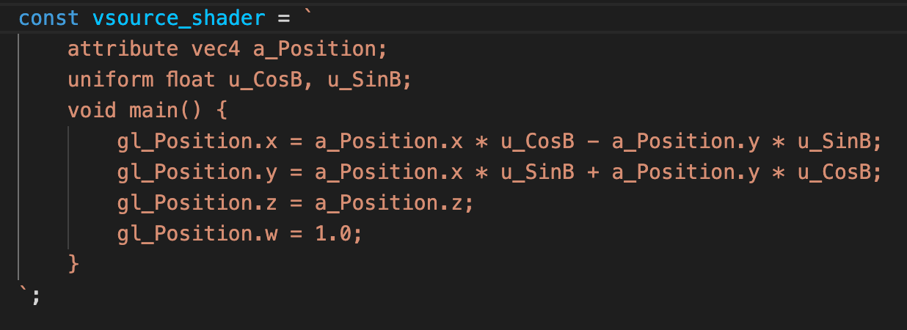
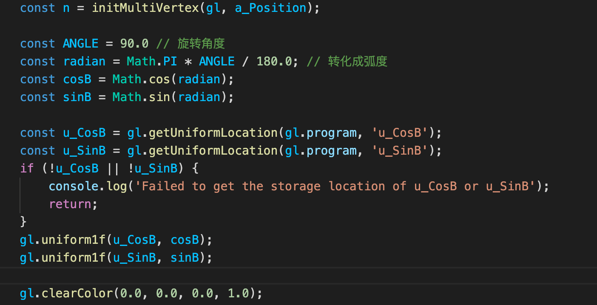
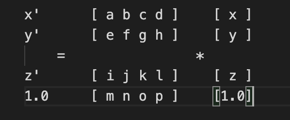

1、基础类型：线，三角形
2、缝合类型：矩形(用两个三角形拼接)，五角星(可以用线实现)
3、其实各种图形基本都是由线、三角形拼接而来的，学会了最基本的图形，可以为更复杂的图形做准备
Float32Array：字节顺序为32位的浮点数型数组 （C浮点数据类型）
Float64Array：字节顺序为64位的浮点数型数组 （C双精度浮点数据类型）
1、获取gl绘制上下文
2、定义着色器字符串，并初始化着色器
3、初始化多个顶点
(1): 定义定点，new Float32Array([])
(2): 创建缓冲区：gl.createBuffer()
(3): 绑定缓冲区到目标：gl.bindBuffer(target, buffer),
target: gl.ARRAY_BUFFER/gl.ELEMENT_BUFFER；buffer: 创建的缓冲区对象
(4): 将数据写入缓冲区：gl.bufferData(target, data, useage)
target: 同上；data: 第一步定义的数据；
useage: gl.STATIC_DRAW(只会向缓冲区对象写入一次数据，但需要绘制很多次)
gl.STREM_DRAW(只会向缓冲区对象写入一次数据，然后绘制若干次)
gl.DYNAMIC_DRAW(会向缓冲区对象多次写入数据，并绘制很多次)
(5): 将数据传递给缓冲区对象：gl.vertexAttribPointer(location, size, type, normalized, stride, offset)
location: 变量地址；
size: 分量个数，两个代表x,y，z,w分别默认0.0，1.0，同vertexAttrib[1234]f参数个数意思；
type: 数据类型（gl.FLOAT ~ Float32Array，gl.INT ~ Int32Array，gl.UNSINGED_INT ~ UInt32Array， gl.SHORT ~ Int16Array，gl.UNSINGED_SHORT ～ UInt16Array， gl.UNSIGNED_BYTE ~ UInt8Array）；
normalized: 传入true 或者 false 表明是否将非浮点型的数据归一化到 [0, 1] 或 [-1, 1] 区间；
stride: 指定相邻两个顶点间的字节数，默认为0 ------- 不懂；
offset: 指定缓冲区对象中的偏移量（以字节为单位），即attribute 变量从缓冲区中的何处开始存储 ------- 不懂；
(6): 开启attribute变量：gl.enableVertexAttribArray(location)
location: 变量地址
4、设置画布清空颜色 gl.clearColor(0.0, 0.0, 0.0, 1.0)
5、清空画布 gl.clear(gl.COLOR_BUFFER_BIT)
6、开始绘制 gl.drawArrays(type, start, n)
type类型有：
gl.POINTS: 点
gl.TRIANGLE: 三角形
gl.TRIANGLE_STRIP: [v0, v1, v2], [v2, v1, v3], [v3, v2, v4]，保证都是逆时针绘制三角形
gl.TRIANGLE_FAN: [v0, v1, v2], [v0, v2, v3]
gl.LINES: 不连贯的线 [v0, v1], [v2, v3]...
gl.LINE_STRIP: 连贯的线 [v0, v1], [v1, v2], [v2, v3]...
gl.LINE_LOOP: 连贯并且封闭 [v0, v1], [v1, v2], [v2, v3]...[vn, v0]
平移和旋转涉及到一些数学计算，先不做仔细探讨，主要对一些语法有些印象
设置变换矩阵变量: gl.uniformMatrix4fv(u_Rotated_Matrix, false, xformMatrix);



注意到上面新增的变量使用uniform定义，这是因为平移、旋转变化都与顶点无关，3个顶点挪动的位置是统一的
